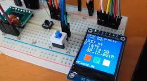

The main objectives of the third week of the embedded systems training program were to do the following:
During the third week of the embedded systems training program, I focused on microcontroller programming and practical experiments. I learned how to write more complex code for microcontrollers, allowing me to develop more sophisticated embedded applications. I gained hands-on experience with conducting practical experiments to further enhance my skills in embedded systems development.
One of the key highlights of this week was developing a more complex embedded application that incorporated advanced programming techniques and practical experiments. I created a project that involved controlling a robotic arm using a microcontroller, which required me to write complex code to manage the movements of the robotic arm and conduct practical experiments to fine-tune the performance of the system. This project allowed me to apply the concepts of microcontroller programming and practical experiments and provided valuable experience in developing embedded applications that require advanced programming techniques and hands-on experimentation.
Overall, the third week provided a deeper understanding of microcontroller programming and practical experiments in embedded systems and set the stage for more advanced topics in the coming weeks.
In the next week, I look forward to exploring more advanced topics in embedded systems, such as real-time operating systems (RTOS) and advanced communication protocols, where I will learn how to develop more complex embedded applications that require real-time performance and advanced communication capabilities.
Key learning outcomes from Week 3:
Overall, Week 3 was an exciting week of learning and hands-on experience in microcontroller programming and practical experiments, and I am eager to continue learning and exploring more advanced topics in the weeks ahead.
Next week, I will focus on exploring more advanced topics in embedded systems, such as real-time operating systems (RTOS) and advanced communication protocols, where I will learn how to develop more complex embedded applications that require real-time performance and advanced communication capabilities.
